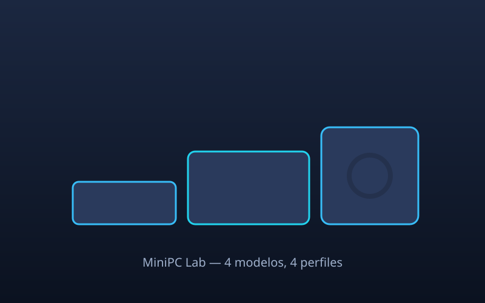

NUC Pro X
Intel Core i7 · 32 GB DDR5 · 1 TB NVMe. El equilibrio perfecto para oficina y desarrollo.
699 €
Ver ficha →
Cuatro modelos, cuatro perfiles de uso. Compara especificaciones, tamaños y precios en un sitio completamente estático pensado para validar caché, compresión e Image Manager.

Cada ficha enlaza a una página con especificaciones completas y galería de imágenes.
Intel Core i7 · 32 GB DDR5 · 1 TB NVMe. El equilibrio perfecto para oficina y desarrollo.

AMD Ryzen 7 7840HS · 32 GB DDR5. Potencia gráfica integrada Radeon 780M.

Intel N100 · 16 GB DDR4. Bajo consumo, ideal para cartelería digital y HTPC.

Ryzen 9 + GPU dedicada · 64 GB. Estación de trabajo compacta para edición y 3D.
Menos espacio, menos consumo y suficiente potencia para la mayoría de tareas.
Entre 6 W en reposo y 65 W a plena carga. Menos ruido y menos factura eléctrica.
Todos los modelos incluyen anclaje VESA para colgarlos detrás del monitor.
Acceso a dos ranuras SO-DIMM y a un segundo slot M.2 en la mayoría de gamas.